flowchart TD
ROOT["<b>Root</b><br/>Try Select Children In Order<br/><i>Global task: STT_CheckLOS</i>"]
CHASE["<b>Chase</b><br/>Enter: HasLOS AND STC_InRange<br/>Task: Move To (TargetActor)"]
PATROL["<b>Patrol</b><br/>Try Select Children In Order<br/>On Tick: HasLOS AND InRange → Chase"]
MOVE["<b>MoveToPoint</b><br/>STT_FindRandomPosition<br/>Move To (RandomLocation)"]
WAIT["<b>WaitAtPoint</b><br/>Delay 5 s ± 1 s"]
IDLE["<b>Idle</b> (fallback)<br/>Delay 5 s"]
ROOT --> CHASE
ROOT --> PATROL
ROOT --> IDLE
PATROL --> MOVE
PATROL --> WAIT
MOVE -. "On Succeeded" .-> WAIT
WAIT -. "On Completed" .-> MOVE
MOVE -. "On Failed" .-> IDLE
CHASE -. "On Tick: NOT HasLOS OR NOT InRange" .-> PATROL
State Trees: Patrol and Chase
Practical Assignment 02 — building an NPC with State Trees in Unreal Engine 5
Introduction
In this assignment you will build an NPC that:
- patrols by walking to random reachable points and waiting;
- chases the player when it has line of sight and the player is within range;
- falls back to an idle state when nothing else is possible.
Before building it, Section 2 explains what a State Tree is, how it chooses which state to run, and how data moves between its parts. Read it first: most problems students run into with State Trees come from not knowing when states are selected and when transitions are evaluated.
What you will build
What is a State Tree?
A State Tree is a general-purpose hierarchical state machine framework introduced in Unreal Engine 5.0. It combines ideas from two established AI patterns: Hierarchical State Machines (HSM) and Behavior Trees (BT). Like a Behavior Tree, it can host complex, reactive logic for an agent. Like a state machine, it has explicit, named states that are clearly active or inactive, so the agent’s current behavior is easy to read and debug.
State Trees were used for AI in The Matrix Awakens demo and in City Sample, but the design is general enough for any stateful logic: combo selection in a fighting game, animation state selection, quest logic, doors, and so on.
State Tree vs. Behavior Tree
Behavior Trees are well established in Unreal Engine and are still supported. State Trees have several advantages that make them a better choice for new projects:
- Explicit states. Instead of traversing a tree of composites and decorators every tick, the agent is always in a known set of active states.
- Hierarchical grouping. A state can have child states. When a parent is active, exactly one of its children is active too. This models behaviors such as
Combat → (Attacking | Flanking | Retreating)without duplicating logic across branches. - Data-oriented design. Data (context, parameters, task outputs) is separated from logic (tasks and conditions), which makes nodes easy to share and reuse between trees.
- Not AI-only. Behavior Trees are tied to the AI Controller/Pawn system. State Trees can run on any actor or component, or standalone.
- Performance. The tree is compiled into a flat data structure when saved, which is efficient to execute at runtime.
| Feature | Behavior Tree | State Tree |
|---|---|---|
| Execution model | Traverses the node graph every tick | Stays in the active states; re-selects only on transitions |
| State visibility | Implicit (current node path) | Explicit, named states |
| Hierarchy | Composites + decorators | Parent/child states |
| Data sharing | Blackboard (key–value store) | Typed bindings between parameters, context and task outputs |
| Non-AI use | Not practical | Fully supported |
| Introduced | UE 4 | UE 5.0 |
Coming from Behavior Trees
If you already know Behavior Trees, this table maps the concepts you will use in this assignment:
| Behavior Tree concept | State Tree equivalent |
|---|---|
| Behavior Tree asset | State Tree asset (with the StateTree AI Component schema) |
| Blackboard keys | Parameters of the tree + property bindings between tasks, conditions and context |
| Selector | A parent state with Selection Behavior = Try Select Children In Order |
| Sequence | Sibling states chained with transitions (On Succeeded → next state) |
Task (BTTask_BlueprintBase) |
Task (StateTreeTaskBlueprintBase) |
| Service (runs periodically on a branch) | Global Task (runs for the whole tree) or a task in a parent state |
| Decorator (condition) | Enter Condition on a state or a Transition Condition |
| Observer Aborts | Transitions with trigger On Tick (or On Event) |
Run Behavior Tree in the AI Controller |
StateTreeAI component on the AI Controller + Start Logic |
Architecture overview
A State Tree is built from these parts:
| Part | Description |
|---|---|
| Schema | Defines which external objects (the context) are available to the tree. For AI, use StateTree AI Component, which provides the Actor (controlled pawn) and the AIController. |
| Parameters | Public values of the tree that can be overridden per instance, similar to Blueprint variables |
| Global Tasks | Tasks that run for the whole lifetime of the tree (caching data, registering listeners, sensing) |
| Evaluators | Compute data every tick. Largely replaced by Global Tasks since UE 5.4. |
| States | Named nodes of the hierarchy; each can hold tasks, enter conditions and transitions |
| Enter Conditions | Must all pass before a state can become active |
| Tasks | Logic that runs while its state is active. Several tasks can run at the same time in one state. |
| Transitions | Rules that decide which state becomes active next |
State types
Every state has a Type property:
| Type | Description |
|---|---|
| State | Standard state: can have tasks, enter conditions and transitions |
| Group | Cannot have tasks, only child states. Useful as a logical container. |
| Linked | Links to a Subtree state in the same asset |
| Linked Asset | Runs another State Tree asset inside the current one |
| Subtree | A state that Linked states can point to; can have tasks, children, conditions and transitions |
In this assignment all states are of type State.
State selection: which state becomes active
Selection is a depth-first search that starts at the Root (or at the target of a transition):
- Children are tried in order, from top to bottom.
- For each child, its Enter Conditions are checked. If they pass and the state is a leaf, it becomes active. If it has children, the search continues into its children.
- If the enter conditions fail, the next sibling is tried.
- If no child of a state can be entered, that state fails to be selected. If nothing under the Root can be entered, the tree fails.
- When switching states, the old states are exited from leaf to root and the new ones are entered from root to leaf. States shared by the old and the new path (for example a common parent) are not exited.
flowchart LR
R([Root]) --> C{"Chase<br/>enter conditions<br/>pass?"}
C -- yes --> CA[["Chase active"]]
C -- no --> P{"Patrol<br/>(no conditions)"}
P --> M{"MoveToPoint<br/>(first child)"}
M --> MA[["Patrol ▸ MoveToPoint active"]]
Enter conditions can’t use outputs of tasks that haven’t run yet
During selection, tasks of the states being considered have not entered yet. If an enter condition is bound to an output of a task in a parent state, that task hasn’t run, so the value is empty and the condition fails. That is why, in this assignment, the line-of-sight data comes from a global task: global tasks start with the tree, before any state is selected.
A state’s Selection Behavior changes how its children are chosen:
| Selection Behavior | Description |
|---|---|
| Try Select Children In Order | Default: try children from top to bottom |
| Try Select Children At Random | Shuffle the children, then try them in that order |
| Try Select Children With Highest Utility (UE 5.5+) | Enter the child with the highest utility score |
| Try Select Children At Random Weighted By Utility (UE 5.5+) | Random choice, with probability proportional to each child’s utility score |
| Try Enter | Enter this state even though it has children (children are not selected) |
| Try Follow Transitions | Follow this state’s transitions instead of entering it |
| None | This state can never be selected directly |
Utility selection (UE 5.5+)
States can have Utility Considerations: inputs mapped through curves that produce a score. Considerations can be combined into a more complex scoring function. This gives you highest score or weighted random selection as an alternative to plain top-to-bottom priority.
Transition selection: where to go next
A transition is: when trigger happens, if conditions hold, go to target.
| Trigger | Fires when |
|---|---|
| On State Completed | A task of the state finished (succeeded or failed) |
| On State Succeeded | A task of the state finished with success |
| On State Failed | A task of the state finished with failure |
| On Tick | Every tick, as long as the conditions pass |
| On Event | A State Tree Event with a given Gameplay Tag is received |
The target can be a named state, Next State (the next sibling), Root, or Tree Succeeded / Tree Failed (which stop the tree).
Transitions are evaluated from the active leaf state up to the root, and the first one that passes wins. So a transition placed on a parent state works for all its active children, unless a child has a transition that fires first. You will use this to put a single “see the player → Chase” transition on Patrol that works for both of its children.
Any active state can complete
A task that finishes on any active state, not only the leaf, triggers that state’s completion transitions. For example, a task on a parent state that succeeds will try the parent’s transitions and interrupt its children. Keep this in mind when you place tasks on parent states.
Implicit transitions
A new leaf state automatically gets a hidden transition back to Root when it completes. This prevents the tree from getting stuck when no transitions are configured. As soon as you add an explicit transition without conditions, the implicit one is removed.
Task lifecycle
Every task can implement three events:
| Event | When it runs | Typical use |
|---|---|---|
| Enter State | Once, when its state becomes active | Initialize, compute a location, start a move |
| Tick | Every frame while its state is active (Blueprint: only if implemented) | Poll something, track a target |
| Exit State | Once, when its state is left | Stop movement, clean up |
Internally each task reports a status (EStateTreeRunStatus in C++):
| Status | Meaning |
|---|---|
Running |
Keep the state active and keep ticking |
Succeeded |
The task is done; triggers On State Succeeded / On State Completed |
Failed |
The task failed; triggers On State Failed / On State Completed |
In Blueprint you don’t return a status. A task is Running until it calls Finish Task (Succeeded = true/false).
Not every task has to finish
A task that only provides data (for example, computing a location for Move To) can do its work in Enter State and never call Finish Task. The state then ends when another task in it, such as Move To, finishes. You will use this in STT_FindRandomPosition.
Task completion control (UE 5.6+)
In UE 5.6, task completion became configurable:
- Each task has a clipboard icon to its left in the state’s Tasks list. Blue means the task is considered for completion (it can end the state); grey means it isn’t. Some built-in tasks, such as Debug Text, are never considered.
- Each state has a Task Completion mode:
- Any (default): the first task considered for completion that finishes ends the state. This is the classic behavior.
- All: the state waits for every task considered for completion to succeed. If one fails, the state fails immediately.
This makes it easy to run several tasks in parallel and continue only when all of them are done.
Property categories and bindings
Tasks and conditions exchange data through bindings, not through a Blackboard. In a Blueprint task or condition, the Category of each variable (Details → Category) tells the State Tree how to treat it. Variables must also be Instance Editable (eye icon) to appear in the State Tree editor.
| Category | Meaning |
|---|---|
Context |
Automatically bound to the best-matching context object (e.g. Actor, AIController); can be changed manually |
Input |
Must be bound (to a parameter, context or another node’s output) for the tree to compile |
Output |
Written by the task; later tasks and conditions can bind to it. An output cannot be bound back into a parameter to store it. |
Parameter |
Optional binding; otherwise you type a value in the State Tree editor. Shown prominently in the Details panel. |
| (none) | Optional binding; can also be set to a direct value |
What a property can bind to: the tree parameters, the context, outputs of global tasks, outputs of tasks in parent states, and outputs of tasks above it in the same state.
Property references
Property References let a task or condition refer to a tree parameter directly, so it can write data back to it, similar to a Blackboard key. In UE 5.4 this is C++ only (FStateTreePropertyRef). UE 5.5+ adds a Blueprint version (FStateTreeBlueprintPropertyRef) with more limited support. This assignment uses outputs and bindings instead.
Setting up the basis
Project and plugins
Create a new project based on the Third Person template (Blueprint) and name it ST_Basics.
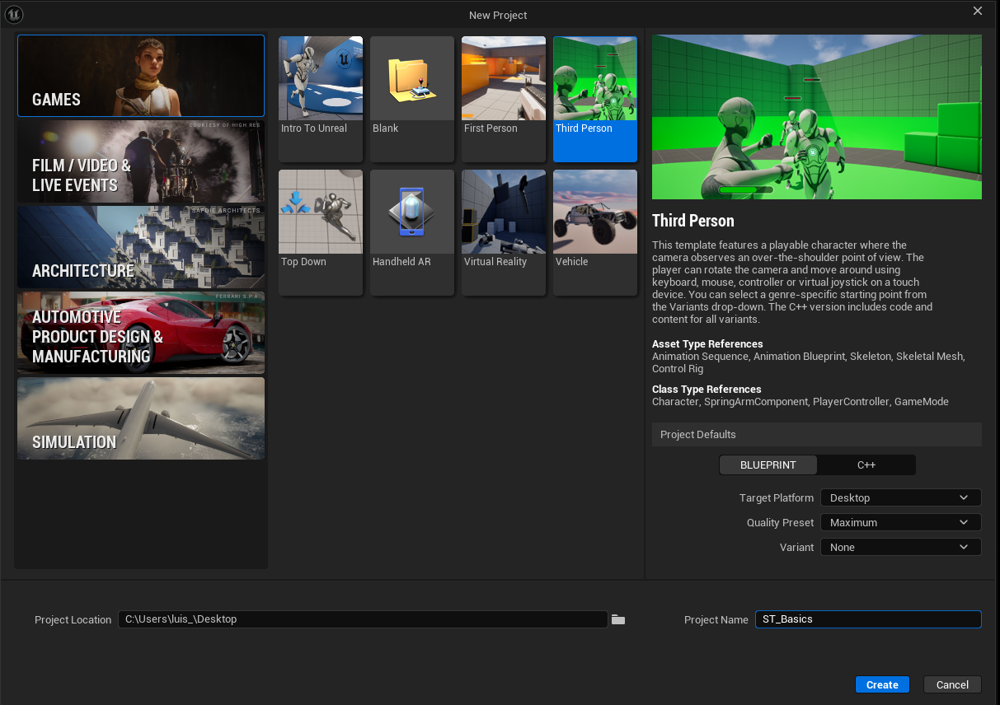
Go to Edit → Plugins and make sure the following plugins are enabled (restart the editor if asked):
- StateTree
- Gameplay State Tree (provides the StateTree AI Component and the AI Move To task)
Tip
Some UE5 versions enable these plugins by default. Check anyway: without Gameplay State Tree the AI component and the Move To task will not appear.
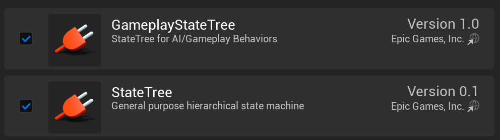
The AI Character
In the Content Drawer, inside ThirdPerson/Blueprints, create a folder named AI.
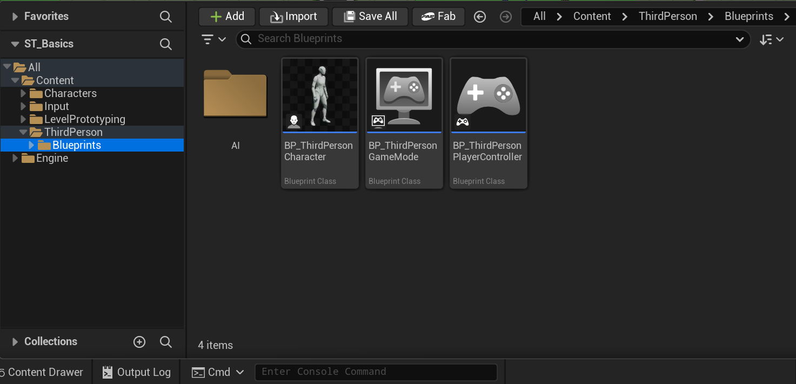
Copy BP_ThirdPersonCharacter into the AI folder (drag it onto the folder and choose Copy Here).
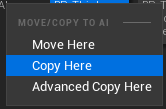
Now, go to the AI folder and rename the copy to BP_AICharacter.
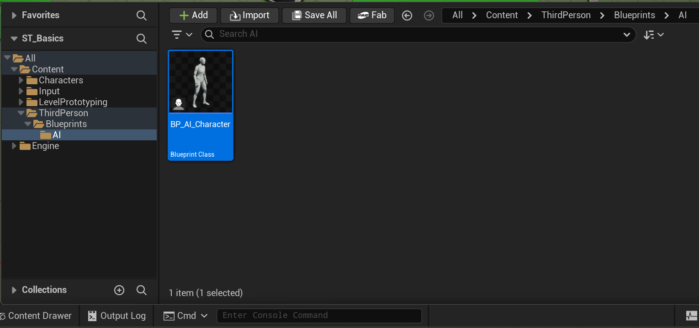
Open BP_AICharacter:
- In the Event Graph, select everything and press Delete. The AI does not read player input.
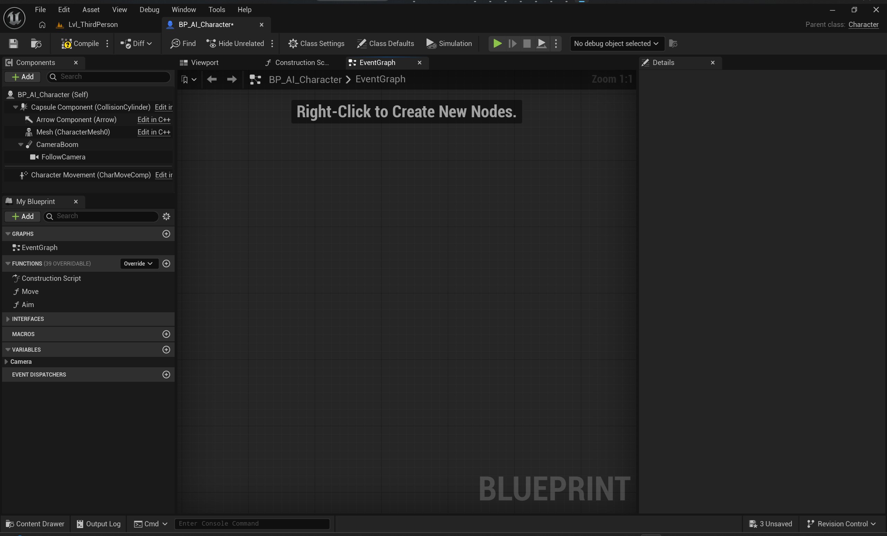
- In the Components panel, delete CameraBoom and FollowCamera.
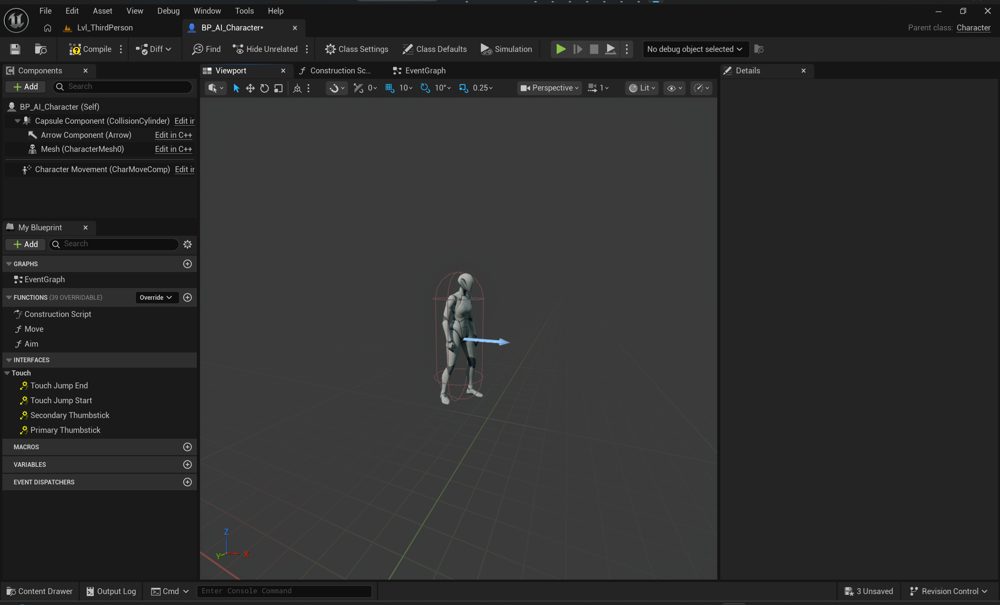
- Compile and Save.
The AI Controller
Now, let’s create an AIController for this Character. If you look into its Class Defaults, more specifically into the AI Controller Class option, you will see that this Character already has a default AI Controller Class, which is the “AIController”:
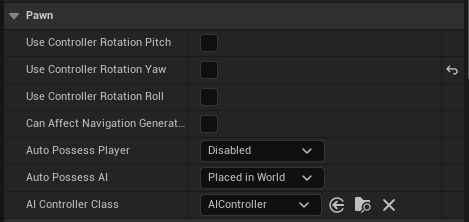
Inside the AI folder, right-click Blueprint Class, expand ALL CLASSES, search for AIController, select it.
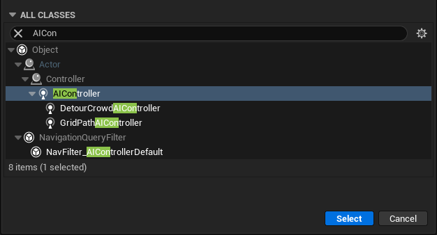
Name the new blueprint BP_AIC_Seeker
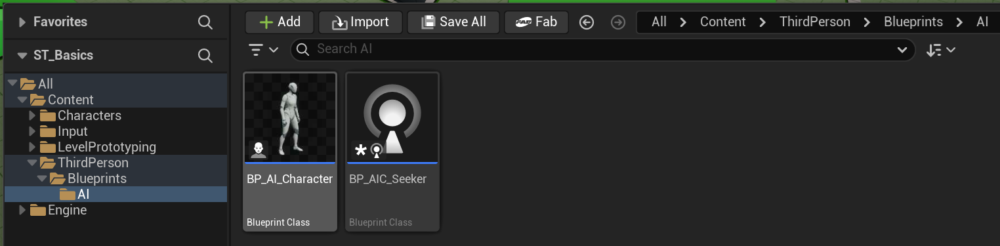
Open BP_AICharacter again, go to Class Defaults and set AI Controller Class to BP_AIC_Seeker. Keep Auto Possess AI set to Placed in World (or Placed in World or Spawned).
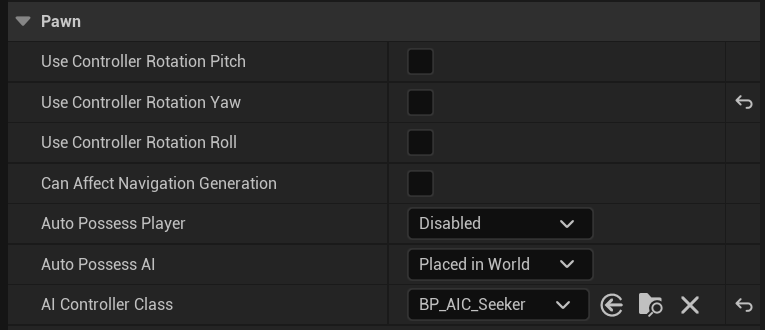
Compile, Save, and drag BP_AICharacter into the level.
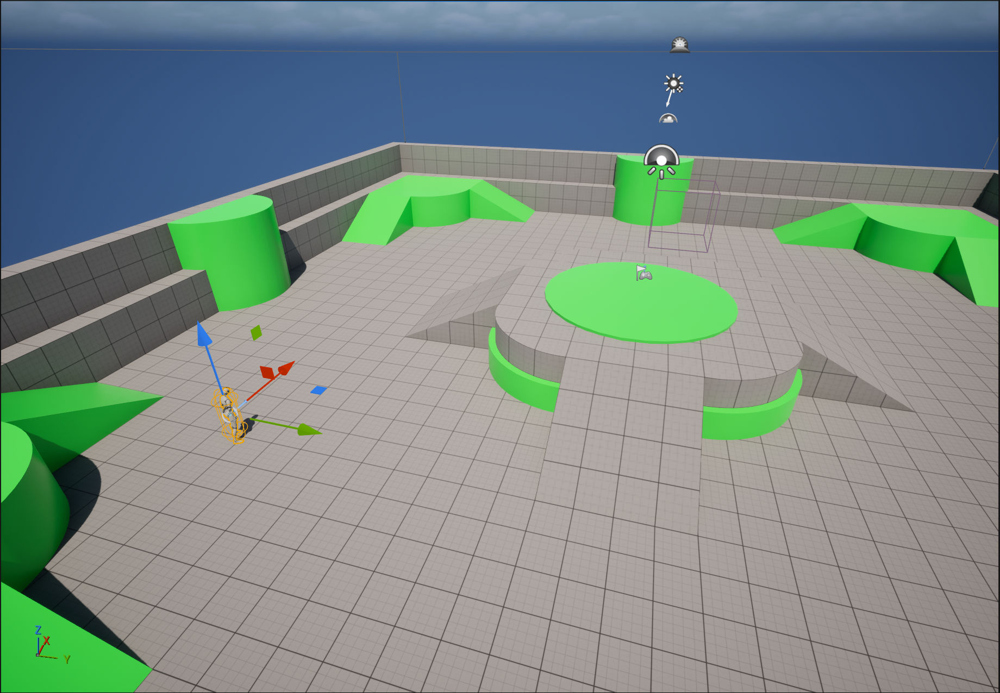
If you press Play now, the character stands still: it has a controller but no behavior yet.
Creating the State Tree
The asset and its schema
In the AI folder, right-click Artificial Intelligence → State Tree. When asked for a schema, choose StateTree AI Component.
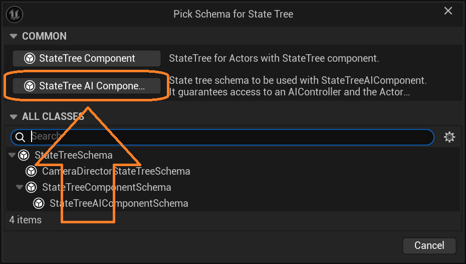
The schema matters
The schema defines the context that the tree receives. The StateTree AI Component schema gives every task and condition access to the AIController and to the controlled pawn (Actor). With the wrong schema the AI tasks (e.g. Move To) will not be available.
Name the asset ST_Seeker and open it.
Select the root of the tree (the asset name at the top of the States panel) and, in the Details panel, under Schema:
| Property | Value |
|---|---|
| AI Controller Class | BP_AIC_Seeker |
| Context Actor Class | BP_AICharacter |
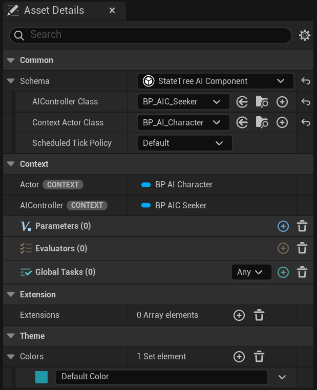
Tree parameters
Parameters are values that belong to the tree and can be bound by any node. They replace the constant values you used to type directly on Behavior Tree nodes, and they can be overridden per component instance.
In the root’s Details → Parameters, add:
| Name | Type | Default |
|---|---|---|
PatrolRadius |
Float | 2000.0 |
MaxChaseRange |
Float | 1000.0 |
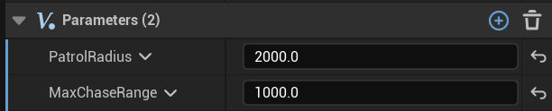
Where did the Blackboard go?
There is no Blackboard. Data flows through bindings: a task exposes Output properties, and other tasks or conditions bind their Input properties to them. Values that never change at runtime are Parameters. You will see this in practice in the next sections.
Running the tree from the AI Controller
Open BP_AIC_Seeker:
- Add Component → StateTreeAI.
- With the component selected, in Details:
- State Tree →
ST_Seeker - Start Logic Automatically → unchecked
- State Tree →
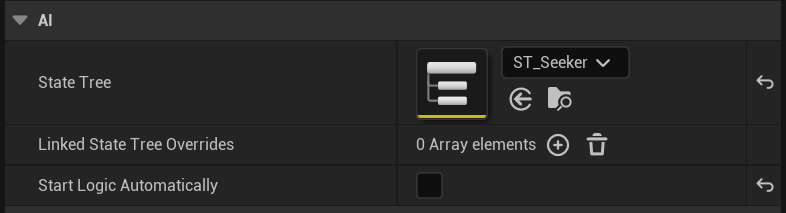
- In the Event Graph add:
Event On Possess ──► StateTreeAI.Start Logic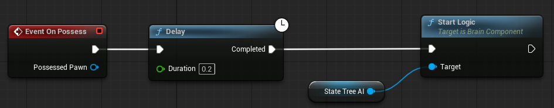
Why not start automatically?
The controller’s BeginPlay can run before it possesses the pawn, so the Actor context would still be empty. Starting the logic on On Possess guarantees that the pawn exists.
Compile and Save. The tree runs, but it is still empty.
Patrol behavior
Blueprint tasks: a quick recap
State Tree tasks in Blueprint derive from StateTreeTaskBlueprintBase and implement Enter State, Tick and/or Exit State (Section 2.7). Each variable needs a Category (Context, Input, Output, Parameter) and must be Instance Editable (Section 2.8).
Task STT_FindRandomPosition
In the AI folder, create a Blueprint Class derived from StateTreeTaskBlueprintBase and name it STT_FindRandomPosition. Create these variables:
| Variable | Type | Category | Default |
|---|---|---|---|
Actor |
Actor (object reference) | Context |
– |
Radius |
Float | Parameter |
2000.0 |
RandomLocation |
Vector | Output |
– |
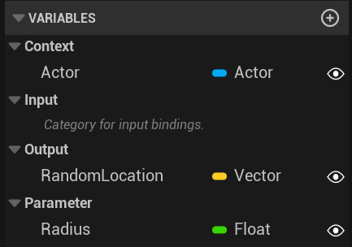
Override Event Enter State and build:
Event Enter State
└─► GetRandomReachablePointInRadius
Origin = GetActorLocation(Actor)
Radius = Radius
out RandomLocation ──► SET RandomLocation
└─► Branch (Return Value)
True ──► (nothing — do NOT call Finish Task)
False ──► Finish Task (Succeeded = false)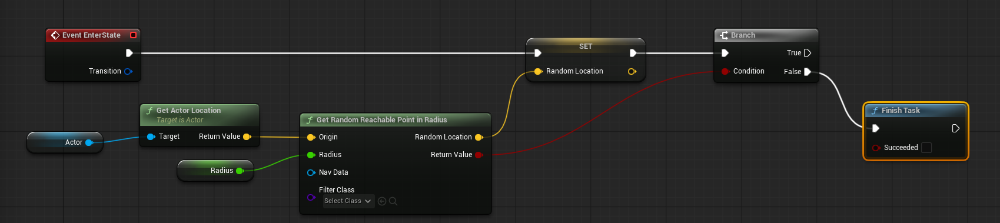
Why doesn’t the task finish on success?
This task only provides data. It will share a state with the built-in Move To task, and we want the state to end when the movement ends, not when the point is found. If no point is found, it fails the state immediately so that the tree can react.
In UE 5.6+ you can make this explicit: in the MoveToPoint state, set the clipboard icon of STT_FindRandomPosition to grey (not considered for completion). See Section 2.7.
Compile and Save.
Building the Patrol states
Open ST_Seeker. In the States panel, use Add State (and right-click → Add Child State) to create this hierarchy:
Root
├── Patrol
│ ├── MoveToPoint
│ └── WaitAtPoint
└── Idle
Color your states
In the asset’s Theme → Colors, create a few colors (e.g. red for Chase, green for Patrol) and assign them with each state’s Color property. Larger trees become much easier to read.
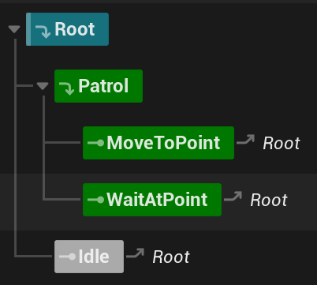
Configure them as follows.
Root – Selection Behavior: Try Select Children In Order.
Patrol – Selection Behavior: Try Select Children In Order. No tasks.
MoveToPoint
| Tasks (in this order) | Settings |
|---|---|
STT_FindRandomPosition |
Radius → bind to Parameters › PatrolRadius |
| Move To (AI category) | Destination → bind to STT_FindRandomPosition › RandomLocation; Acceptable Radius = 50 |
| Transition | Trigger | Go to |
|---|---|---|
| 1 | On State Succeeded | WaitAtPoint |
| 2 | On State Failed | Idle |
To bind a property, click the small binding (chain) icon next to it and pick the source from the menu (see Section 2.8 for what can be bound).
The explicit transitions you add here replace the implicit transition to Root that new leaf states have (Section 2.6).
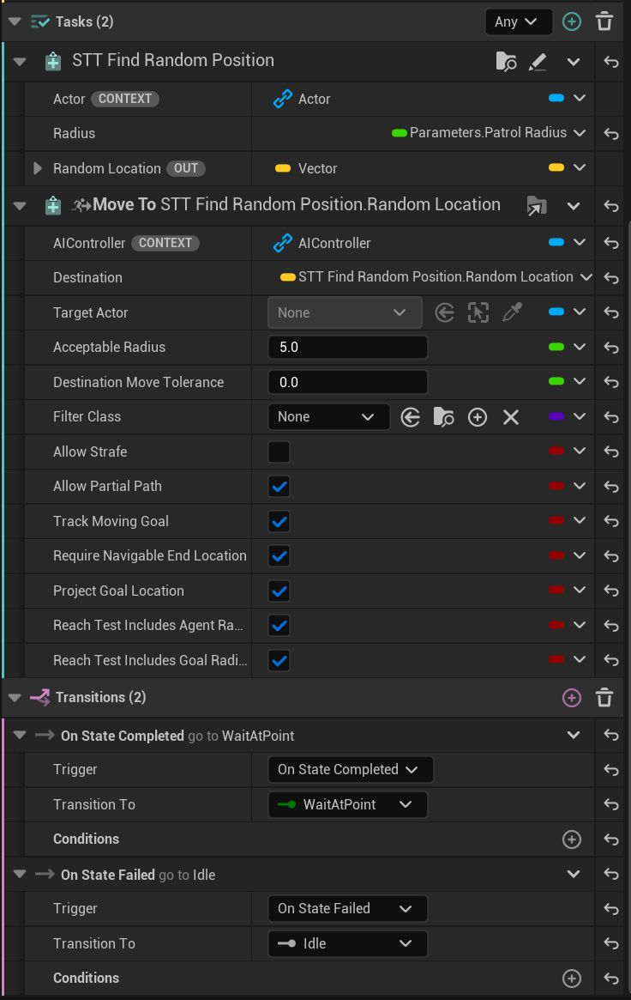
WaitAtPoint
| Task | Settings |
|---|---|
| Delay | Duration = 5.0, Random Deviation = 1.0 |
| Transition | Trigger | Go to |
|---|---|---|
| 1 | On State Completed | MoveToPoint |
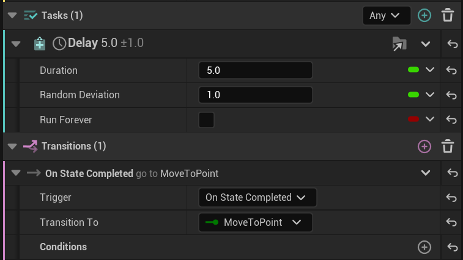
Idle (fallback: runs if patrolling fails)
| Task | Settings |
|---|---|
| Delay | Duration = 5.0 |
| Transition | Trigger | Go to |
|---|---|---|
| 1 | On State Completed | Root |
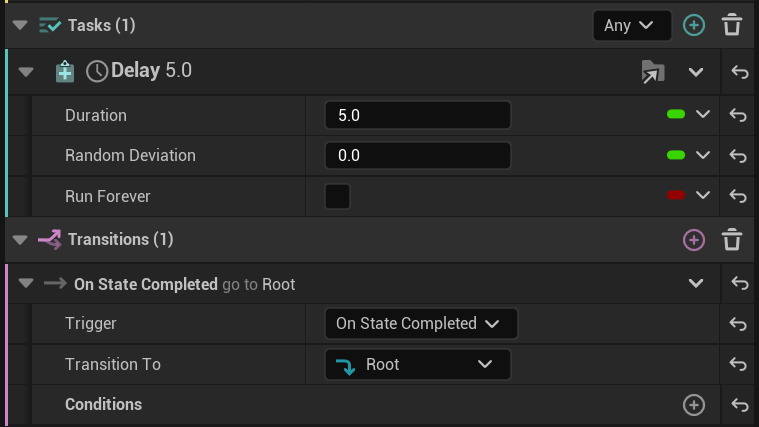
Your state tree should look like this:
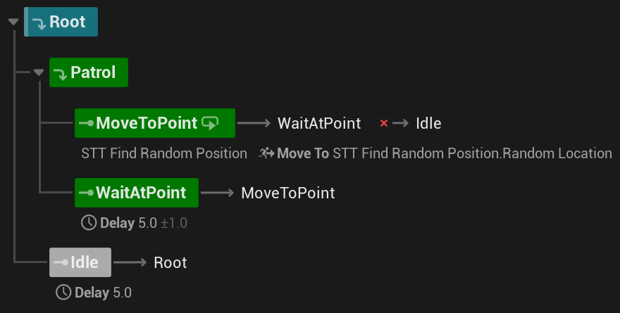
Click Compile in the State Tree toolbar (fix any red errors it reports) and Save.
Checkpoint 1
Play. The agent should walk to a random point, wait about 5 seconds, pick a new point, and repeat. Because MoveToPoint is re-entered every cycle, its Enter State runs again and a new random location is computed each time.
Chase behavior
To chase the player the agent needs to know (1) who the player is and (2) whether it can see them. In a Behavior Tree this would be a Service writing to Blackboard keys. Here it is a Global Task: a task that starts with the tree, ticks for as long as the tree runs, and exposes its results as outputs that the whole tree can bind to.
Global task STT_CheckLOS
Create a new StateTreeTaskBlueprintBase named STT_CheckLOS with these variables:
| Variable | Type | Category | Default |
|---|---|---|---|
Actor |
Actor | Context |
– |
TargetActor |
Actor | Output |
– |
HasLOS |
Boolean | Output |
false |
CheckInterval |
Float | Parameter |
0.25 |
TimeSinceLastCheck |
Float | (none, not instance editable) | 0.0 |
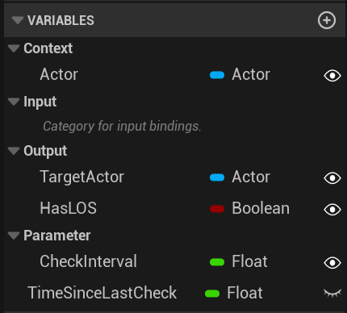
Event Enter State – find the target once and force an immediate first check:
Event Enter State
└─► SET TargetActor = Get Player Character (Player Index 0)
└─► SET HasLOS = false
└─► SET TimeSinceLastCheck = CheckInterval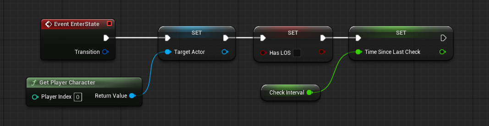
Event Tick – run the trace only every CheckInterval seconds (the equivalent of a Service Interval):
Event Tick (Delta Time)
└─► SET TimeSinceLastCheck = TimeSinceLastCheck + Delta Time
└─► Branch (TimeSinceLastCheck >= CheckInterval) False ──► end
└─► SET TimeSinceLastCheck = 0
└─► Is Valid (TargetActor) Not Valid ──► SET HasLOS = false
└─► Capsule Trace For Objects
Start = GetActorLocation(Actor)
End = GetActorLocation(TargetActor)
Radius = 23, Half Height = 10
Object Types = [WorldStatic, WorldDynamic, Pawn, PhysicsBody]
Actors to Ignore = [Actor]
└─► Break Hit Result
└─► SET HasLOS = (Return Value AND Hit Actor == TargetActor)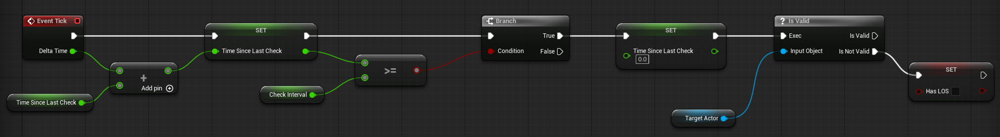
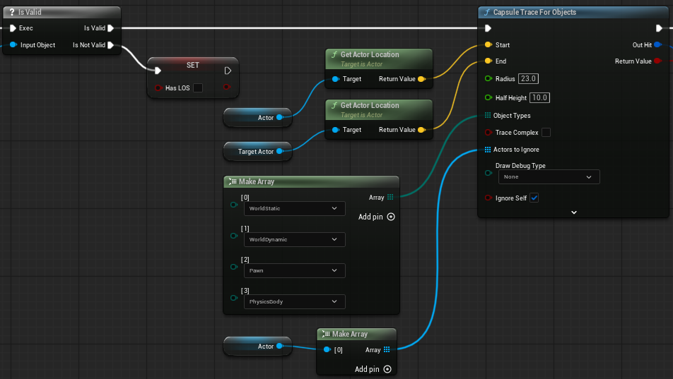
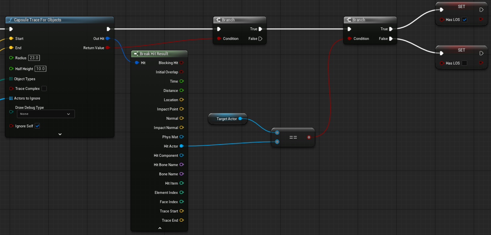
Never call Finish Task in a global task
If a global task finishes, the whole State Tree stops. STT_CheckLOS must keep running forever, so it never calls Finish Task.
Compile and Save. In ST_Seeker, select the root and, in Details → Global Tasks, add STT_CheckLOS.
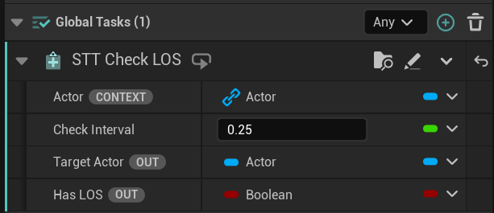
Note
The player reference is now obtained inside the tree when it starts, so the AI Controller no longer needs to write it anywhere (no Set Value as Object, no Make Literal Name, no Delay).
The Chase state
Add a new child of Root called Chase and drag it so that it is the first child (above Patrol). Since the root tries its children in order (Section 2.5), Chase has the highest priority. Its enter conditions can safely bind to STT_CheckLOS because global tasks are already running when states are selected.
Enter Conditions
| Condition | Settings |
|---|---|
| Bool Compare | Left → bind to STT_CheckLOS › HasLOS; Right = true |
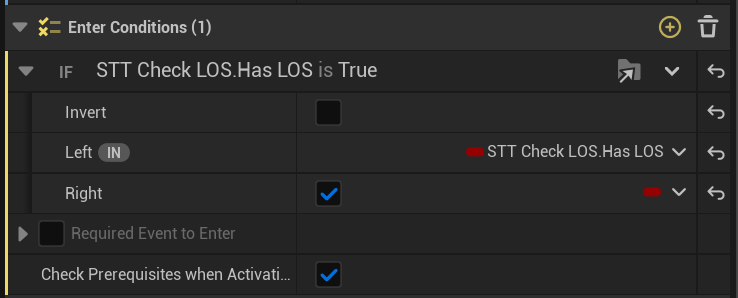
Tasks
| Task | Settings |
|---|---|
| Move To | Target Actor → bind to STT_CheckLOS › TargetActor; Acceptable Radius = 100; Track Moving Goal = ✔ |
Transitions
| # | Trigger | Conditions | Go to |
|---|---|---|---|
| 1 | On Tick | Bool Compare: HasLOS == false |
Patrol |
| 2 | On State Completed | – | Root |
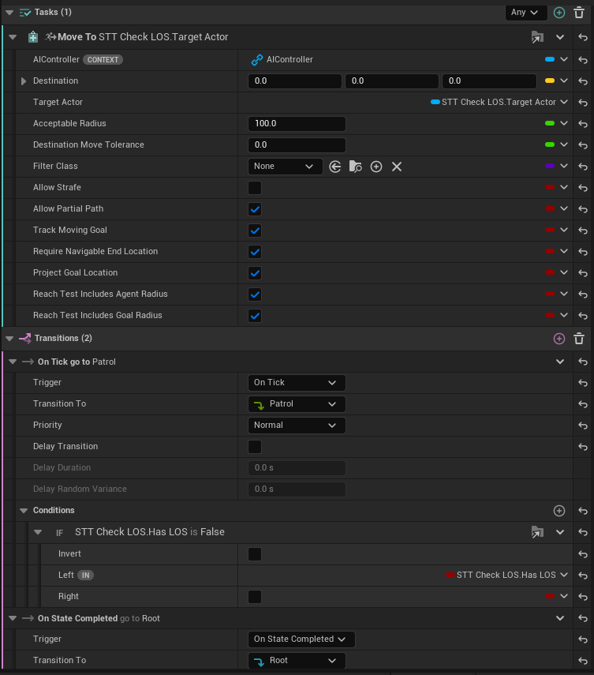
Reacting while patrolling
Enter conditions are only checked when a state is being selected. While the agent is patrolling, nothing re-selects the root, so it would never notice the player. This is what Observer Aborts did in Behavior Trees. In a State Tree you add a transition that checks every tick. Because transitions are evaluated from the leaf up to the root (Section 2.6), one transition on the parent covers all its children.
Select Patrol (the parent, so the transition is active for both MoveToPoint and WaitAtPoint) and add:
| # | Trigger | Conditions | Go to |
|---|---|---|---|
| 1 | On Tick | Bool Compare: HasLOS == true |
Chase |
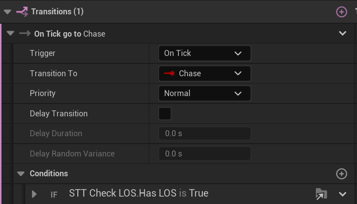
Compile and Save.
Checkpoint 2
Play and walk in front of the agent: it should start chasing you. Hide behind a wall: after a moment it goes back to patrolling.
Limiting the detection range
The agent currently sees the player from any distance. We will write a custom condition, the State Tree equivalent of a Blackboard decorator.
Condition STC_InRange
Create a Blueprint Class derived from StateTreeConditionBlueprintBase named STC_InRange:
| Variable | Type | Category | Default |
|---|---|---|---|
Actor |
Actor | Context |
– |
TargetActor |
Actor | Input |
– |
MaxRange |
Float | Parameter |
1000.0 |
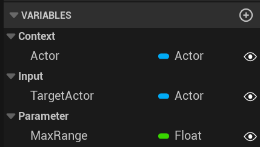
In Functions → Override, choose Test Condition (ReceiveTestCondition) and build:
Test Condition
└─► Return Node
Return Value = Is Valid(TargetActor)
AND (Get Distance To(Actor, TargetActor) < MaxRange)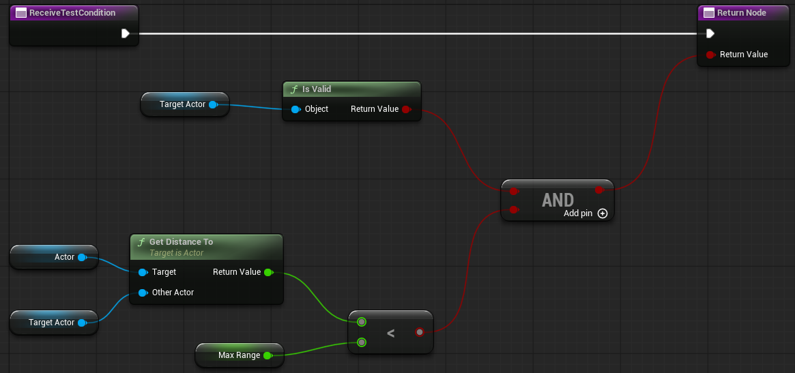
Compile and Save.
Using the condition
In ST_Seeker, add STC_InRange in three places. In all of them bind Target Actor → STT_CheckLOS › TargetActor and Max Range → Parameters › MaxChaseRange.
- Chase → Enter Conditions: add it after the Bool Compare, with operand AND.
- Patrol → transition On Tick → Chase: add it after the Bool Compare, with operand AND.
- Chase → transition On Tick → Patrol: add it after the Bool Compare, set operand to OR, and toggle Invert on
STC_InRange(shown as NOT). The transition now reads: NOT HasLOS OR NOT InRange.
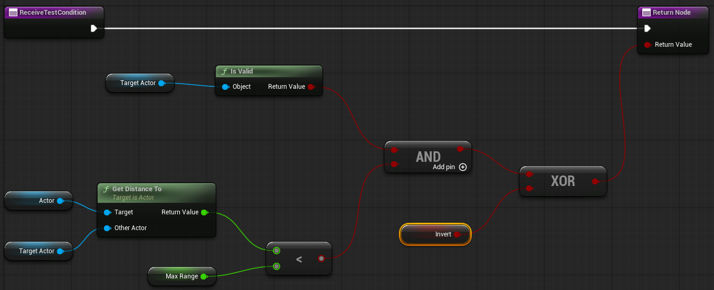
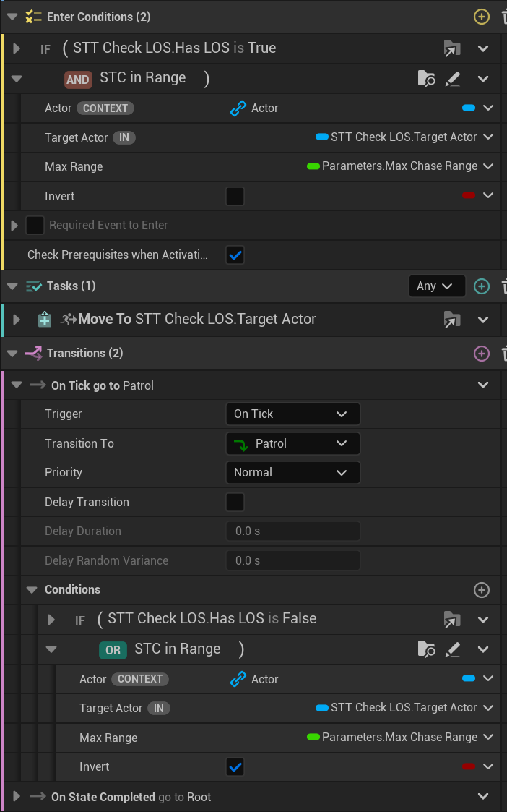
Note
Conditions in a list are combined with the AND/OR operand shown on the left of each condition. You can also indent conditions to group them, like parentheses.
Making sure a path exists
The Behavior Tree version used a Does Path Exist decorator. The State Tree Move To task can handle this itself. In Chase → Move To set:
| Property | Value |
|---|---|
| Allow Partial Path | ✘ (unchecked) |
| Require Navigable End Location | ✔ |
If no full path to the player exists, Move To fails. Add a transition to Chase:
| # | Trigger | Go to |
|---|---|---|
| 3 | On State Failed | Patrol |
Move this transition above the On State Completed → Root transition, so that failure is handled first.
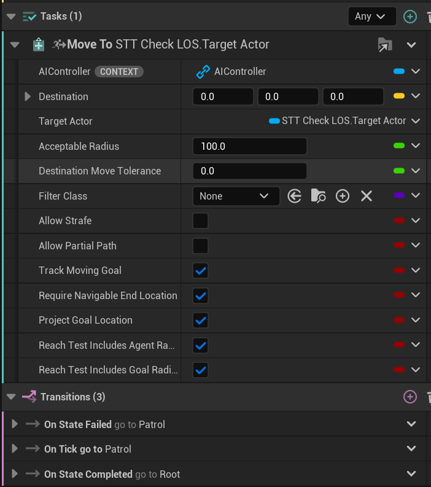
Checkpoint 3
Change MaxChaseRange in the root’s Parameters (e.g. 600) and play. The agent should only chase you when you are closer than that distance. Because it is a tree parameter, you can also override it per agent in the StateTreeAI component of each controller.
Debugging
State Trees include a dedicated debugger:
- In the State Tree editor, open Window → Debugger (or the Debugger tab).
- Press Play. Recording starts automatically; you can also start it manually from the debugger toolbar.
- Select the agent’s instance and scrub the timeline to see which states were active, which transitions fired, and task/condition values at each frame.
The active states are also highlighted in the tree while the game is running. When something doesn’t work, check the debugger before changing the logic.
Other useful tools:
- Gameplay Debugger. During play, press ’ (apostrophe) to open the AI debug overlay for the agent in front of the camera. The active State Tree states are listed under Brain Component. NumPad 4 toggles the perception view (useful for Exercise 4).
- Debug Text task. Add a Debug Text task to a state (Text = the state name, Reference Actor bound to the context Actor) to show above the agent’s head which state it is in.
- State Enabled. Right-click a state and uncheck State Enabled to take it out of selection while you test other parts of the tree. Don’t forget to enable it again.
Common problems
| Symptom | Likely cause |
|---|---|
| The tree never starts | Start Logic not called, or the component has no State Tree assigned |
| Move To doesn’t appear in the task list | Gameplay State Tree plugin disabled, or wrong schema |
| A task’s variables don’t appear | Variables not Instance Editable or missing Category |
| Input shows a red error | An Input property is not bound |
| The agent never moves | No Nav Mesh Bounds Volume, or it doesn’t cover the floor |
| The tree stops completely | A global task called Finish Task |
| An enter condition always fails | It is bound to an output of a task in a parent state that hasn’t entered yet (Section 2.5) |
| A state is greyed out and never entered | State Enabled is unchecked |
Final result
| State | Selection / Enter conditions | Tasks | Transitions |
|---|---|---|---|
| Root | Try Select Children In Order | Global: STT_CheckLOS |
– |
| Chase | HasLOS AND STC_InRange |
Move To (TargetActor, no partial path) | On Tick: NOT HasLOS OR NOT InRange → Patrol · On Failed → Patrol · On Completed → Root |
| Patrol | Try Select Children In Order | – | On Tick: HasLOS AND InRange → Chase |
| ↳ MoveToPoint | – | STT_FindRandomPosition, Move To (RandomLocation) |
On Succeeded → WaitAtPoint · On Failed → Idle |
| ↳ WaitAtPoint | – | Delay 5 s ± 1 s | On Completed → MoveToPoint |
| Idle | – | Delay 5 s | On Completed → Root |
stateDiagram-v2
direction LR
[*] --> MoveToPoint
MoveToPoint --> WaitAtPoint : succeeded
WaitAtPoint --> MoveToPoint : completed
MoveToPoint --> Idle : no point found
Idle --> MoveToPoint : after 5 s
MoveToPoint --> Chase : sees player in range
WaitAtPoint --> Chase : sees player in range
Chase --> MoveToPoint : lost player or no path
Exercises
Catch and return. When the AI Character reaches the player, it currently re-selects the root and immediately chases again. Make it go back to patrolling instead, and ignore the player for a few seconds. Hint: add a state after the catch with a Delay task, or store a cooldown timestamp as an output of a global task and use it in Chase’s enter conditions.
Walk or run. While patrolling, the agent should run when its destination is far and walk when it is close, with the speed changing gradually (interpolate Max Walk Speed on the Character Movement component).
- Make it also work while chasing: when close to the player, the agent should slow down to a walk. Hint: one task in the Patrol and Chase states (or a global task) that ticks, reads the distance to the current goal, and uses FInterp To.
Waypoint patrol. Add a second way of patrolling based on hand-placed waypoints in the level. Create a
BP_Waypointactor, expose an array of waypoints on the AI Character, and add a new state (for exampleWaypointPatrol) that selects the next waypoint in order. Hint: use a tree parameter (boolUseWaypoints) and enter conditions to choose between the random patrol and the waypoint patrol.(Extra) Events instead of polling. Replace the On Tick transitions with On Event transitions. Use an AI Perception component (Sight) on the controller and, in On Target Perception Updated, call Send State Tree Event on the StateTreeAI component with the gameplay tags
AI.Event.PlayerSeen/AI.Event.PlayerLost. Compare both approaches: when is polling simpler, and when do events scale better? Things to watch out for:- The Gameplay Tags must exist in Project Settings → GameplayTags, otherwise Send State Tree Event does nothing.
- The Target of Send State Tree Event must be the StateTreeAI component, not the controller or the pawn.
- AI Sight only detects Enemies when the actors are on different teams (
IGenericTeamAgentInterface, C++). In Blueprint-only projects, enable Detect Neutrals (or all three options) in Detection by Affiliation, and filter the perceived actors yourself.